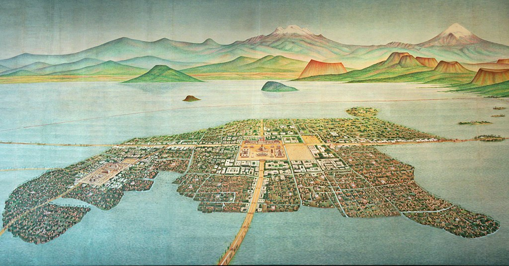
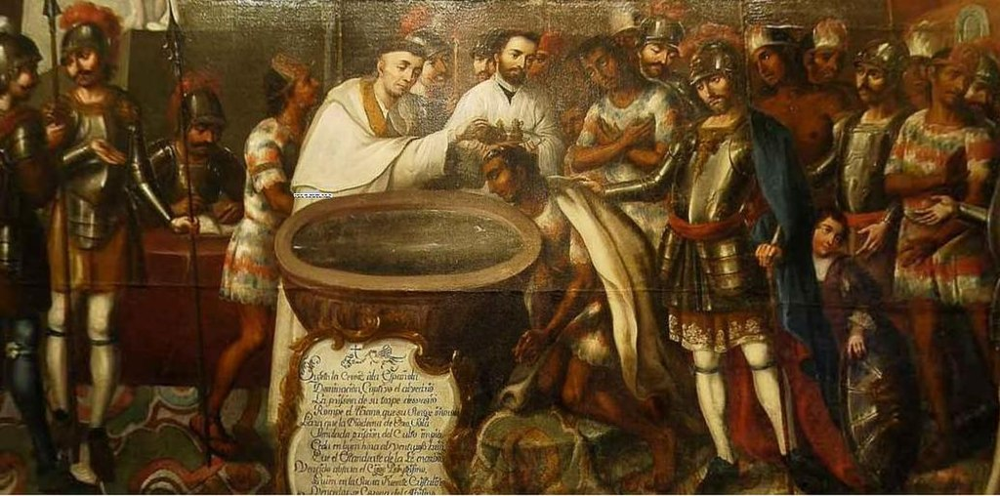
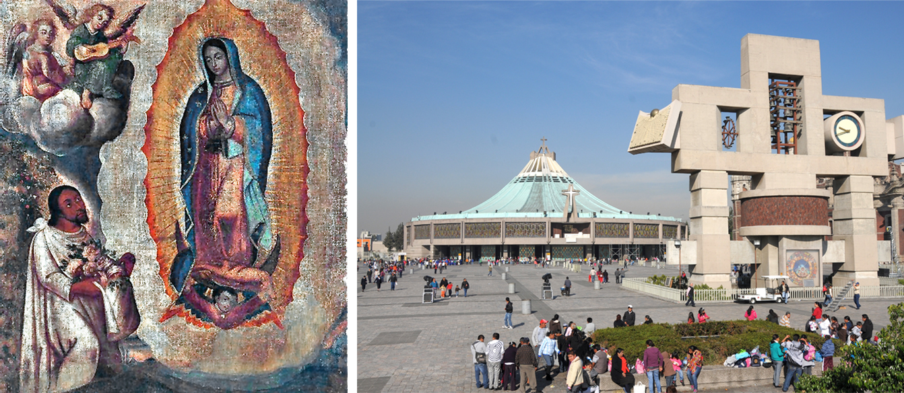
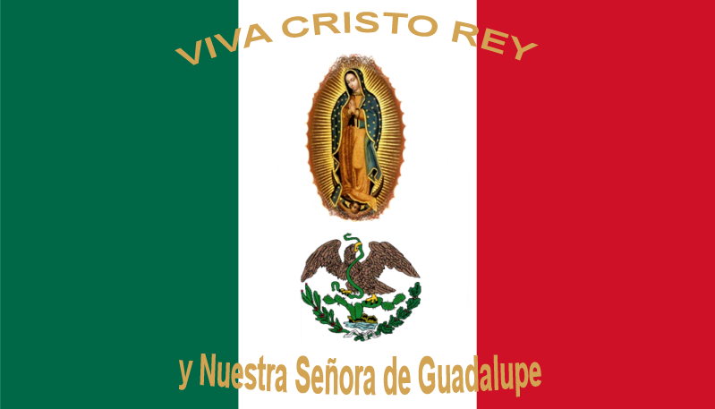
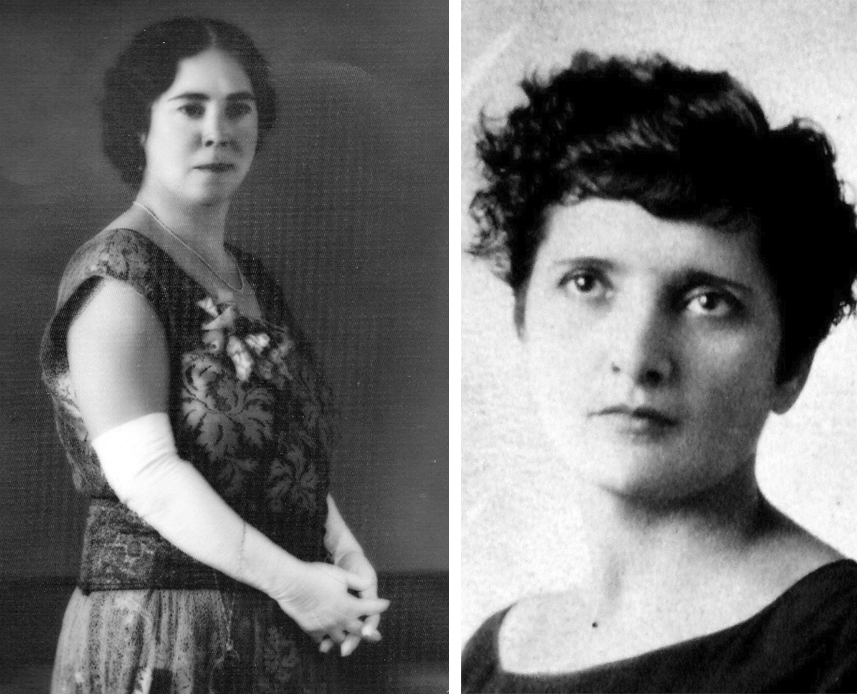

Religión, poder, familia y género
Un recorrido por la Ciudad de México
En esta ocasión nos quedaremos en la Ciudad de México para hacer un viaje a través de distintas épocas, de forma que podamos observar la evolución de estos aspectos de la vida del ser humano.
Religión y poder
Nos vamos al siglo XVI, ¡acompáñanos!
En esta ocasión, nos dirigimos al siglo XVI en Tenochtitlán (hoy Ciudad de México), presencias la colisión de dos mundos: la cultura indígena mesoamericana y la expansión del poder español.
Te maravilla la arquitectura y organización de la ciudad sobre un lago, con canales y puentes. Te impresiona el esplendor de templos, palacios, mercados y jardines, los cuales son símbolos de y espiritualidad, honran diversos dioses en una politeísta. Los líderes religiosos son fundamentales en la comunidad, al hablar con uno de ellos te dice que veneran a distintos dioses como Huitzilopochtli (dios del Sol y la guerra) y Quetzalcóatl (dios de la sabiduría y el viento), el cual cuenta la leyenda que es un dios blanco y barbado.

Tenochtitlán, previo a la conquista de los españoles. Imagen de Gary Todd. Wikimedia commons
¿Por qué los líderes religiosos tenían un papel central en la cultura mexica? En la cultura mexica, las creencias y rituales moldeaban la estructura social y política, y el poder estaba entrelazado con la comprensión de lo divino.
Te sorprende que los mexicas sean una civilización expansionista y guerrera, dominando a otros pueblos mediante tributos y sacrificios humanos.
Cuando los españoles llegan a la costa de Veracruz, son recibidos en paz por los mexicas debido a la semejanza entre Hernán Cortés y Quetzalcóatl, pero sus verdaderas intenciones no son pacíficas, desencadenando un conflicto por el territorio.
Los recién llegados tienen una perspectiva eurocentrista y la influencia del cristianismo católico. Observas que tienen una jerarquía eclesiástica y ven la conversión religiosa como forma de consolidar poder y control.
¿Qué quiere decir esto? Los españoles consideraban que la religión era una forma de ejercer influencia sobre las poblaciones indígenas, justificar la conquista y establecer una nueva estructura de poder.
Tiempo después, los españoles llegan a Tenochtitlán con aliados indígenas descontentos por el dominio mexica. Moctezuma II les da la bienvenida con regalos y hospitalidad, pero los españoles lo toman como rehén y exigen oro y plata.
Presencias el sufrimiento y la destrucción causados por los españoles, debido a su superioridad militar y tecnológica sometiendo a los indígenas. Te indigna su crueldad y codicia, saqueando y quemando templos y obras de arte. Luego, en 1521, tras meses de sitio, los mexicas se rinden por hambre, enfermedades y la superioridad española.
Desde ese momento, los españoles controlan la Ciudad y usan la conversión al cristianismo para justificar la conquista y establecer su autoridad. Destruyen templos indígenas y erigen iglesias católicas, convirtiendo a los indígenas y desplazando líderes religiosos tradicionales por católicos, este es un proceso llamado

Evangelización por la Orden Franciscana.Imagen de José Vivar y Valderrama. Wikimedia Commons
¿Qué efectos tuvo la evangelización en nuestro país? La evangelización altera el poder, pues la religión se convierte en una herramienta para controlar a la población. La intersección de religión y poder cambió la dinámica al imponer una nueva religión y anular creencias indígenas. Así, la religión reafirmó la superioridad política y armamentista de los españoles, mostrando cómo esta relación afecta profundamente la estructura social y cultural.
A pesar de las imposiciones religiosas españolas, ves cómo muchos pobladores se resistieron manteniendo sus propias creencias politeístas y rituales, gracias a esto surge del mito de la Virgen de Guadalupe en 1531, el cual dice que la Virgen se aparece a Juan Diego en el cerro del Tepeyac y le pide construir una capilla y prueba su veracidad con rosas y su imagen en su manto. El obispo, Fray Juan de Zumárraga, acepta el milagro y ordena el santuario.

La Guadalupana con Juan Diego. Esta pintura representa la aparición de la Virgen de Guadalupe frente a Juan Diego. Imagen de El Nuevo Doge y Basílica de Guadalupe. Este es el santuario erigido en honor a la Virgen de Guadalupe, se encuentra al pie del Cerro del Tepeyac en la alcaldía Gustavo A. Madero. Imagen de Karolja.
¿Cómo afectó esto a la cultura mexicana? Las apariciones ejemplifican el mezclando elementos indígenas con el catolicismo. La Virgen incorporó aspectos indígenas, haciéndola accesible. Fue herramienta de control y evangelización, conectando la religión católica con creencias indígenas, facilitando conversión y sumisión.
Con curiosidad observas que la Virgen se presenta a los indígenas como una mediadora entre las dos culturas, asumiendo aspectos prehispánicos, como "Guadalupe" (que en náhuatl significa "la que aplasta la serpiente") y el Tepeyac, antiguo lugar de culto a Tonantzin.
¿Qué ocurrió después? La devoción a la Virgen unió a mexicanos, fusionando identidades, siendo símbolo de resistencia y unidad. Inspiró eventos como Independencia, Reforma y Revolución. Es un ícono artístico y cultural, que se ha reinterpretado por creadores y movimientos.
Seguramente ya te has dado cuenta que la Virgen de Guadalupe es un símbolo que sigue presente en nuestra sociedad, para aprender un poco más sobre esto, te invitamos a ver el siguiente video de UNAM global, en el que podrás observar el impacto de este mito en nuestro país. Te recomendamos tomar las ñnotas que consideres pertinentes para que logres afianzar nuevos conocimientos. Para acceder al video, da clic en la siguiente imagen, luego vuelve aquí para continuar.
Aunque en ocasiones no lo parezca esta relación entre la religión y el poder ha estado presente en nuestra cultura (y en muchas otras) hasta nuestros días. Para que puedas ver cómo ha cambiado y evolucionado esta relación en la Ciudad de México, después de la conquista de los españoles, te invitamos a dar clic a continuación.
Te enteras de que la Revolución tuvo un impacto importante en la religión y el poder, que se reflejó en la Constitución de 1917, que estableció la separación entre el Estado y la Iglesia, y limitó los derechos y privilegios de esta última. Todo esto debido a que desde 1855 se decretó la Ley Juárez, en esta se suprimió el fuero eclesiástico en materia civil. Después, en 1857 se promulgó la Constitución en la que se oficializaba la separación entre la iglesia y el Estado.
Entonces, ¿la religión ya no tenía más poder en México? Aunque se redujo en gran medida la influencia que tenía en las decisiones del estado, ciertamente la iglesia católica aún formaba parte de la vida de la comunidad, debido a que en la comunidad seguían muy arraigadas las tradiciones y valores promovidos por la iglesia católica.
A pesar de estas reformas a la constitución, en 1920, observas que la Iglesia Católica aún tenía una influencia significativa en la sociedad y el poder político ya que los valores religiosos y las jerarquías eclesiásticas moldeaban muchas áreas de la vida pública y privada.Esto provoca que algunos sectores de la sociedad no reciban estas reformas constitucionales de buena manera y generan una fuerte oposición por parte de los grupos conservadores, católicos y terratenientes, que se sienten amenazados por el cambio. Estos grupos se organizan en una rebelión armada conocida como la Guerra Cristera, que duró desde 1926 hasta 1929, y que enfrentó a los defensores de la fe contra los defensores de la ley.
¿De dónde provenían los grupos conservadores? La mayoría de los que comenzaron esta oposición a la constitución provenían de los estados de Guanajuato, Jalisco, Querétaro, Aguascalientes, Nayarit, Colima, Michoacán y parte de San Luis Potosí y Zacatecas. Por otro lado, en la Ciudad de México y en la península de Yucatán creció un movimiento social que reivindicaba los derechos de libertad de culto en México.

Bandera de los cristeros, los opositores de la reforma a la Constitución de 1917. Imagen de Immaculate. Wikimedia Commons
Veamos juntos qué pasó en las siguientes décadas.
¿Qué aprendiste con este recorrido? Probablemente te has dado cuenta de que la Ciudad de México ha cambiado mucho a lo largo del tiempo, y que la religión y el poder han sido factores clave para entender esos cambios. Sin embargo, la relación entre la religión y el poder no ha sido estática ni lineal, sino dinámica y compleja, y ha estado marcada por tensiones y contradicciones.
A través de este viaje en el tiempo, se puede apreciar cómo los conceptos de religión y poder han evolucionado en la Ciudad de México, desde una sociedad profundamente religiosa y jerárquica hasta una más diversa y descentralizada, donde las dinámicas de poder se entrelazan con cambios sociales, políticos y culturales a lo largo de las décadas.

Sobre la religión y el poder
A continuación, te mostramos ejemplos de algunos de los conceptos que acabamos de revisar. Da clic en el icono de H5p y revisa las frases asociadas con cada tarjeta, luego da clic sobre la tarjeta para ver de qué concepto se trata, ¡y eso es todo!
Esperamos que estos ejemplos sean muy útiles para ti y sobre todo que con ellos confirmes lo que hemos revisado hasta el momento. Para continuar, revisaremos los términos de familia y género, además realizaremos una breve revisión de su evolución a lo largo de los años.
Familia y género
Para comenzar, revisaremos los conceptos de familia y género, además de sus cambios y cómo los ha afectado la globalización. Desde una perspectiva antropológica, la familia no solo se trata de lazos sanguíneos, sino también de las relaciones sociales que dan forma a nuestras vidas. La familia adopta diferentes formas a lo largo de la historia y varía entre estructuras nucleares y extendidas. El género va más allá de la dicotomía masculino-femenino, implica roles y comportamientos asignados socialmente, que pueden ser flexibles o rígidos según la cultura. Estos conceptos evolucionan debido a influencias culturales, económicas y sociales, desafiandonos a comprender la diversidad humana y a cuestionar nuestras percepciones preconcebidas.
La antropología nos invita a explorar las complejidades de la sociedad humana desde una perspectiva única, para comprender mejor la evolución de estos conceptos realizaremos un recorrido en la Ciudad de México por algunas décadas, así que es momento de continuar con nuestro viaje. Para poder ver esta evolución, da clic a continuación.
Comenzamos nuestro viaje en la década de 1920, después de la Revolución Mexicana. Observas contrastes entre progreso urbano y pobreza rural, modernidad y tradición.
La Revolución afectó a las mujeres, las cuales lucharon como soldaderas, enfermeras y líderes. Algunas, como Hermila Galindo o Elvia Carrillo Puerto, promovieron el sufragio femenino.

Hermila Galindo, política, escritora, maestra, oradora, periodista y activista feminista sufragista mexicana. Imagen de Gabomiranda y Elvia Carrillo Puerto, lideresa feminista, política y sufragista mexicana. Imagen de Yodigo.
¿Qué impulsó a estas valerosas mujeres a luchar por este crucial derecho? Ellas vivieron tiempos de cambios políticos, sociales y culturales en el país y accedieron a educación, lo que las expuso a ideas liberales y democráticas. Las influencias globales ya se reflejaban en la cultura, por ejemplo: las luchas por el voto femenino comenzaron en Finlandia, Noruega y Estados Unidos en años previos.
Sin embargo, el voto de las mujeres aún no se logra en México en esta década, ya que las mujeres continúan afrontando discriminación y violencia de
La es patriarcal y tienden a tener más de 5 hijos, los están muy diferenciados: las mujeres se dedican al hogar y a criar a los hijos, mientras que los hombres son proveedores, con privilegios educativos y laborales. Para que puedas observar algunas imágenes de cómo se conformaban las familias en esta década, da clic aquí.¿Cómo continuó la evolución de la familia y la igualdad de género en nuestra ciudad? Continúa revisando las siguientes décadas para averiguarlo.
¿Qué te ha parecido este breve recorrido por las distintas décadas en la CDMX? Estamos seguros que hay nuevos conceptos que ahora forman parte de ti.
La antropología puede ayudarnos a comprender mejor estos fenómenos de cambio cultural y social, ya que, como seguramente recuerdas, esta disciplina permite tener una mirada multidisciplinaria en la que podemos observar los distintos elementos que impactan en la vida del ser humano.
Religión, poder, familia y género
Es momento de un reto. Comprueba todo lo que has aprendido con la siguiente actividad.
¿Qué tal te fue en la actividad? Estamos seguros que muy bien.
Con todo lo que has aprendido hasta el momento sobre estos temas, te pedimos que reflexiones ¿qué crees que se pueda hacer para que la sociedad sea más justa?, ¿tú ya eres parte de estos cambios?
Es momento de continuar con nuestro viaje.